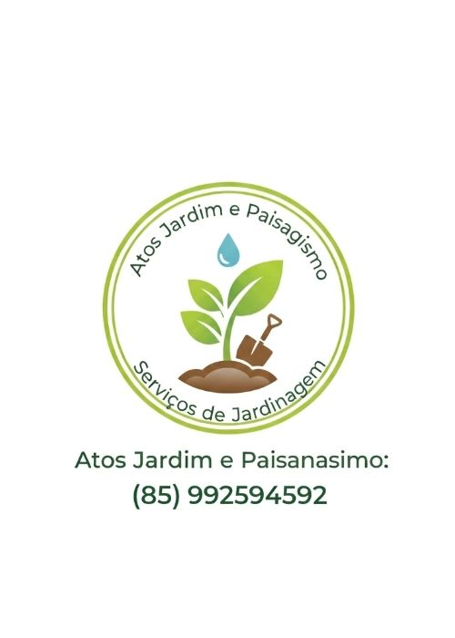

Setor Automotivo
Gospel & Música

Transporte e Logística
Varejo Digital
Serviços Técnicos

Tecnologia e Inovação

Tecnologia e Inovação

Transformamos a essência do seu negócio em uma identidade visual memorável e lucrativa.
Crie uma identidade que transmita autoridade e atraia os clientes certos.
SOLICITAR MINHA LOGO